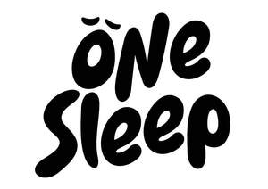

Trade Mark Journal No.2025/025 20 June 2025
UK00004213330 3 June 2025 (20,24,35)

- Class 20
- Bed mattresses; Mattresses; Futon mattresses [other than childbirth mattresses]; Mattress toppers; Foam mattresses; Mattress pads; Beds, bedding, mattresses, pillows and cushions; Latex mattresses; Mattress bases; Mattresses [other than child birth mattresses]; Spring mattresses; Mattresses (Spring -); Nap mats [cushions or mattresses]; Sofa beds; Bedding for cots [other than bed linen]; Bed slats; Divan beds; Beds incorporating inner sprung mattresses; Inner sprung mattresses; Memory foam pillows; Pillows; Bedding for nursery cots [other than bed linen]; Latex pillows; Bunk beds; Bed chairs; Beds; Bumper guards for cots, other than bed linen; Fire resistant mattresses; Bamboo pillows; Chair beds; Bumper guards for cribs, other than bed linen; Nursing pillows; Maternity pillows; Bed rails; Foldaway beds; Scented pillows; Bed frames; U-shaped pillows; Mattresses made of flexible wood; Futons; Inflatable pet beds; Cushions [furniture]; Stuffed pillows; Furniture being convertible into beds; Support pillows for use in baby seating; Portable mattresses for automobiles; Beds of wood; Travel pillows; Adjustable beds.
- Class 24
- Mattress covers; Ticks (mattress and pillow coverings); Covers for mattresses; Contoured mattress covers; Mattress slips [other than incontinence]; Ticks [mattress covers]; Bed blankets; Blankets (Bed -); Crib bumpers [bed linen]; Bed linen and blankets; Bed pads; Cot bumpers [bed linen]; Sofa blankets; Bed linen; Linen for the bed; Linen (Bed -); Valanced bed sheets; Bed clothes and blankets; Fabric bed valances; Protective loose covers for mattresses and furniture; Comforters for beds; Quilted blankets [bedding]; Bed quilts; Silk bed blankets; Futon quilts; Bed coverings; Bed valances; Bed clothes; Flat bed sheets; Bed blankets made of cotton; Shams (Pillow -); Pillow shams; Fitted bed sheets; Comforters (bedding); Bed sheets of plastic [not being incontinence sheets]; Bed sheets of plastic, not being incontinence sheets; Canopies (bed linen); Crib sheets; Pillowcases [pillow slips]; Quilt bedding mats; Bed covers; Bed canopies; Infants' bed linen; Bed linen of paper; Valances for beds; Cot sheets; Bed sheets of paper; Valanced bed covers.
- Class 35
- Sales promotions at point of purchase or sale, for others.
One Sleep Trading Limited